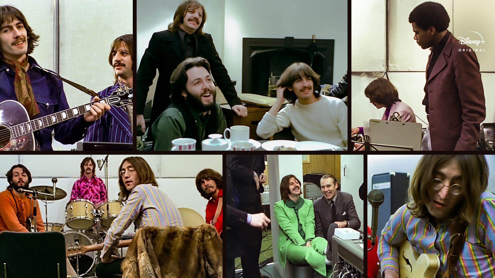

Historia
The Beatles constituye un ícono en la historia de la música. Esta banda de rock estuvo activa durante la década de 1960 y se le reconoce como la más prominente en la trayectoria de la música popular. Se inició en Liverpool, Inglaterra, a partir de la iniciativa de John Lennon, quien en 1957 formó el grupo musical The Quarrymen con algunos compañeros de colegio bajo el género Skiffle, e incorporó a Paul McCartney luego de conocerlo en una fiesta. Este último convocó a su amigo George Harrison para unirse como guitarrista líder de la agrupación .En 1960, los compañeros de colegio de Lennon abandonaron al grupo e ingresó Stuart Sutcliffe, amigo de Lennon, como bajista.Posteriormente y luego de una audición, se integró Pete Best en la batería. Stuart propuso cambiar el nombre del grupo por “The Beetles” y luego de probar con otros nombres, en agosto del mismo año, decidieron llamar a su banda “The Beatles”. Sutcliffe abandonó la formación en 1961, y Best fue reemplazado por Ringo Starr al año siguiente.
Sus comienzos
A partir de 1962, la banda quedó conformada por John Lennon (guitarra rítmica, vocalista), Paul McCartney (bajo, vocalista), George Harrison (guitarra, vocalista) y Ringo Starr (batería, vocalista) strong> .Estos músicos lograron amalgamar su talento para trabajar con diferentes géneros que iban desde baladas pop hasta rock psicodélico, incluyendo elementos clásicos en sus canciones, las cuales fueron compuestas en su mayoría por Lennon y McCartney, con algunos valiosos aportes de Harrison y Ringo Starr al repertorio del grupo. Este éxito marcó la diferencia en la forma de hacer y escuchar música, dando inicio a la Beatlemania, impulsada por un montón de fanáticas que consideraron a este cuarteto como representantes de los ideales asociados a la transformación cultural de la década de 1960. Beatlemania se mantuvo vigente, luego del lanzamiento del último álbum de la banda, titulado Let it be, en mayo de 1970, año en el cual ocurrió la separación de sus integrantes.